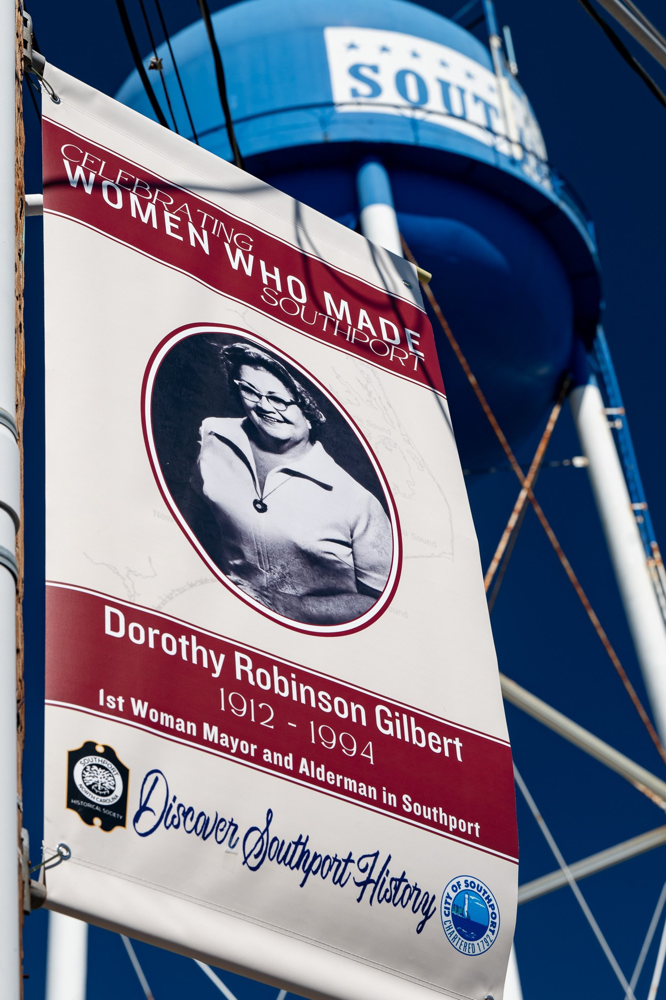
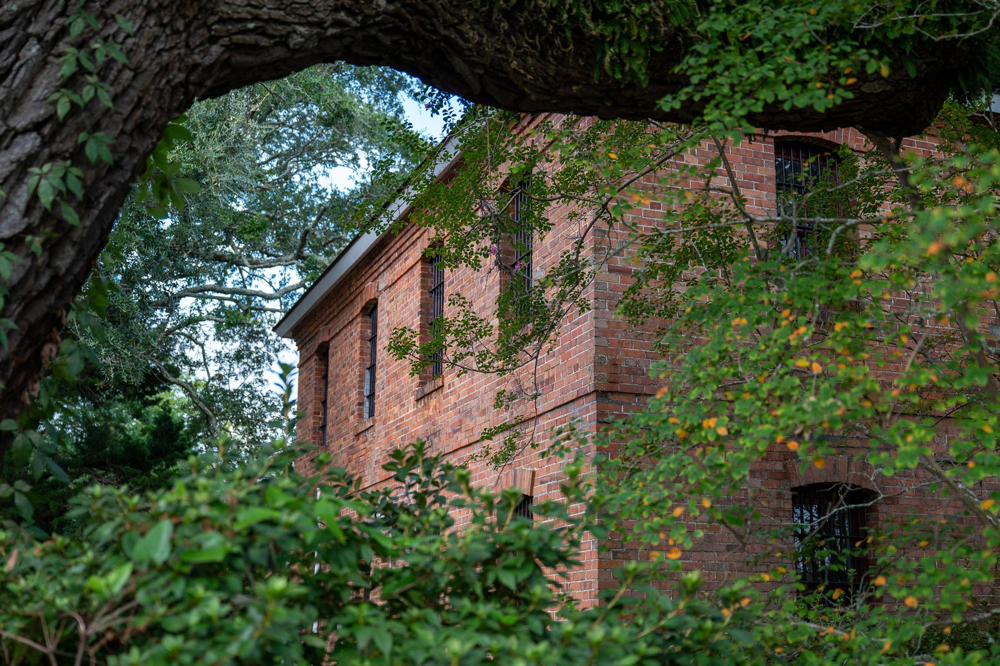
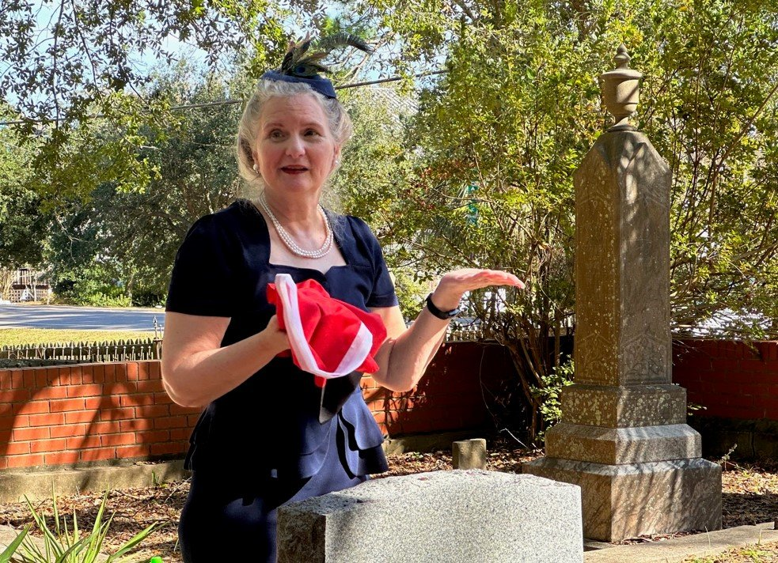

Our Mission
We strive to keep Southport’s history alive by offering opportunities for learning through educational programs, community events, publications, and preservation projects that enhance and protect our town’s cultural heritage.
“Our mission is about more than safeguarding artifacts — it’s about connecting people to the stories that define who we are.”
— Liz Fuller, President 2022–2026
Preserving the Past. Inspiring the Future.
The Southport Historical Society (SHS) is a volunteer-driven nonprofit organization dedicated to researching, preserving, and sharing the unique history of Southport, North Carolina, and its surrounding communities.
Founded in 1976, SHS brings together people who share a passion for our coastal town’s past — not just its landmarks and dates, but the personal stories that shaped Southport’s enduring character.



What We Do
Every year, SHS engages the community through diverse programs and projects, including:
Educational Programs: Monthly “2nd Tuesday Talks,” General Membership meetings, and special presentations at local organizations.
Museums: Operation of the Fort Johnston Southport Museum and Visitors Center and the Brunswick County Old Jail Museum, welcoming over 30,000 visitors annually.
Historic Preservation: Installation of plaques and markers on historic properties, restoration of monuments and the 1904 Jail, and partnerships with the John N. Smith Cemetery outdoor museum.
Publications: With over 16 titles in our catalog, we’re the largest publisher of Southport history in the world.
Community Traditions: Organizers of the beloved Holiday Tour of Homes, Living Voices of the Past, and Commemorative Brick Program at Fort Johnston.
Our Community Impact
Through collaboration with local organizations — from the Brunswick Arts Council and City of Southport to the Maritime Museum and John N. Smith Restoration & Preservation — SHS promotes historical understanding, tourism, and civic pride.
Our educational programs are always free to members and non-members, ensuring that everyone has access to Southport’s remarkable story.
In 2021, the Southport Historical Society was awarded the Albert Ray Newsome Award for Excellence in Local History by the Federation of North Carolina Historical Societies. SHS was selected for this award based on the extensive online programming conducted throughout the COVID pandemic.

Current SHS Board of Directors
Mary Ellen Watts Poole, President
Donnie Joyner, Vice President
